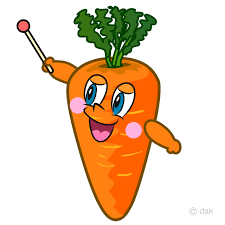

Welcome to the wonderful world of carrots! If Bugs Bunny were here, he'd probably give us a big thumbs up (and then proceed to munch on a few). Carrots may not be the most glamorous of vegetables, but they sure are versatile. Whether you like them raw, cooked, or even in cake form, there's no denying that carrots are a rootin' tootin' good time. So come on down the carrot patch and let's get this veggie party started!
